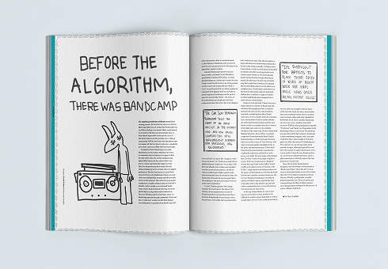
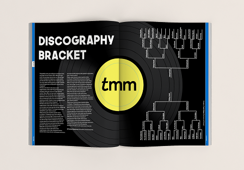
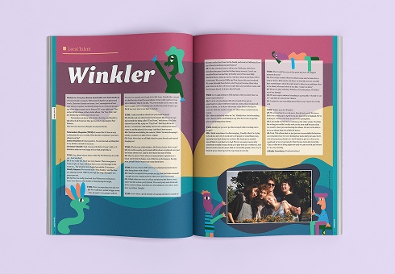
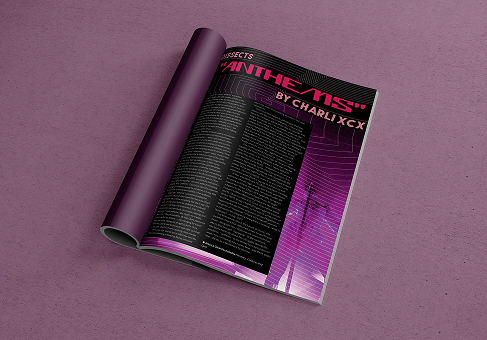
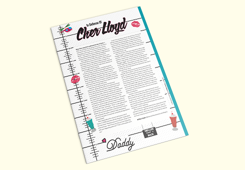
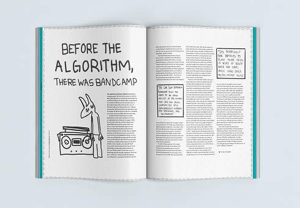
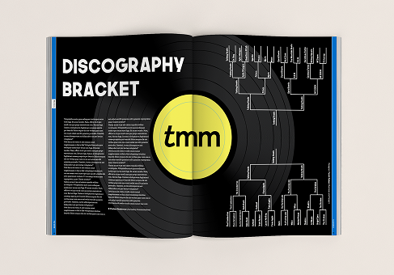
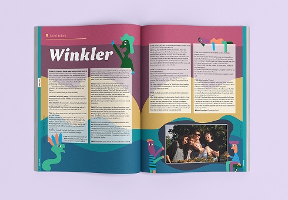
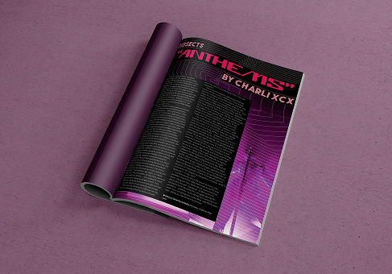
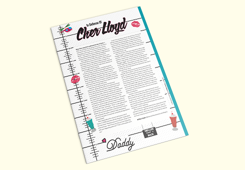

Tastemakers Magazine
Graphic and Print Design
Duration
1.5 years
Role
Designer
Overview
As a designer for Tastemakers, I selected a student-written, music-centered article and designed a full editorial spread for print. The magazine was published twice each semester, requiring layouts that balanced visual impact with readability across multiple issues.
 








